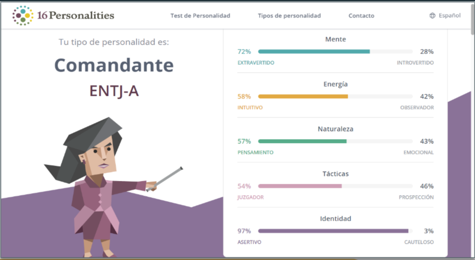
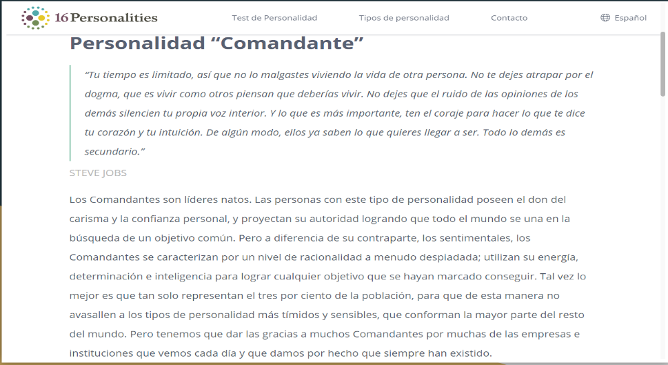
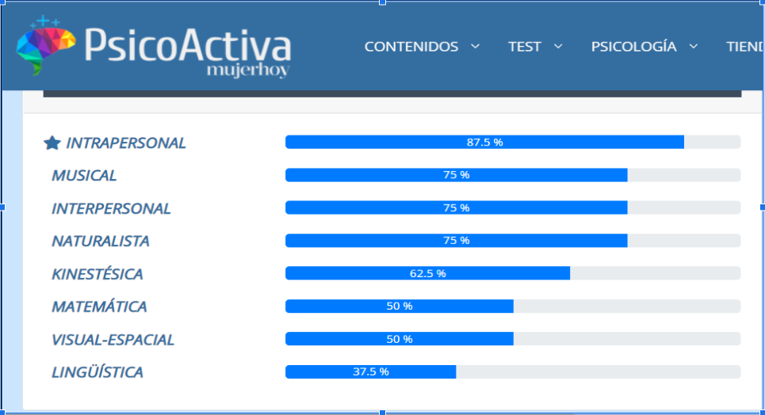
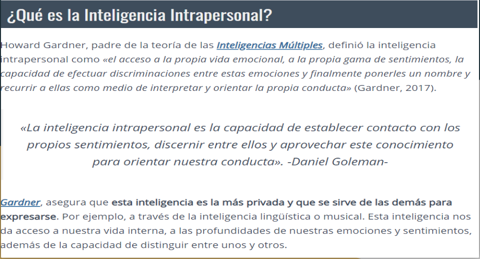

¿Quien Soy?
Mi nombre es Sandro Williams Encarnación Loor, nací en Caracas
Venezuela el 16 de Julio de 1994. Soy el hermano mayor ya que solo
somos mi hermana y yo, mis padres son de nacionalidades diferentes
lo que me permitió vivir una infancia llena de viajes y de conocer
distintas culturas. Me considero una persona bastante calma y de un
temperamento estable, me gusta pasar tiempo conmigo mismo pero de
igual forma disfruto el poder conversar con un extraño en la calle o
pasar tiempo junto a mi familia y amigos.
Cosas que me hacen Feliz!
- Pasar tiempo con mi familia.
- Comer, comer y comer!
-
Tener largas conversaciones de cualquier tema con un conocido.
- Realizar deportes como el soccer y el voleyball.
- Escuchar musica y cantar.
- Admirar la naturaleza.
- Ver la cara de mi hijo cada dia al levantarme.
Cosas que me hacen Enojar!
- Humillaciones.
- Falta de respeto.
- Cualquier tipo de racismo.
- Personas que desean imponer sus creencias u opiniones.
- La injusticia.
- La desigualdad de cualquier tipo.
- Las personas oportunistas y ventajistas.
Cosas que me hacen Único
Ser yo mismo, ser quien siempre e querido ser y vivir la vida como
si cada dia fuese el último que tuviera en esta tierra. No tengo
talentos extravagantes o cualidades académicas sobresalientes, pero
la forma de ver la vida como yo la percibo, siento que es única y
bastante excéntrica.
Test de Personalidad


Test de Inteligiencia Multiples


Metas
Corto Plazo
- Empezar curso de INFOTEP con el pie derecho.
-
Aprender a programar con HTML y CSS antes de Diciembre de este
año.
- Conseguir un empleo en el área de tecnología.
-
Aprender el manejo de Linux básico antes de finales de este año.
-
Empezar mi carrera de Ingenieria en Informatica en el mes de
Agosto.
Mediano Plazo
- Graduarme como técnico en Informática de INFOTEP.
- Empezar curso de CCNA 1 manejador de networking en INFOTEP
- Dedicar más horas a la carrera de Informática.
- Dominio de Windows Server.
- Dominio de Linux.
Largo Plazo
- Lograr certificación CCNA.
- Graduarme de la carrera de Ingenieria en Informatica.
-
Establecerme laboralmente en el área de la tecnología,
principalmente en el área de redes y servidores.
- Realizar algún tipo de maestría en el área de redes.
- Tener mi propia casa.
- Lograr emprender con un proyecto personal.
Agradecimientos
Agradezco a todas aquellas personas que me impulsan cada día a
seguir cumpliendo mis metas, principalmente a mi esposa quien es mi
apoyo incondicional ante cualquier nuevo proyecto en el cual quiera
encaminar. De igual forma agradecer a mis padres por los principios
y valores que me fueron inculcados durante mi niñez y mi
adolescencia los cuales me han enseñado a ser una persona luchadora
y perseverante.